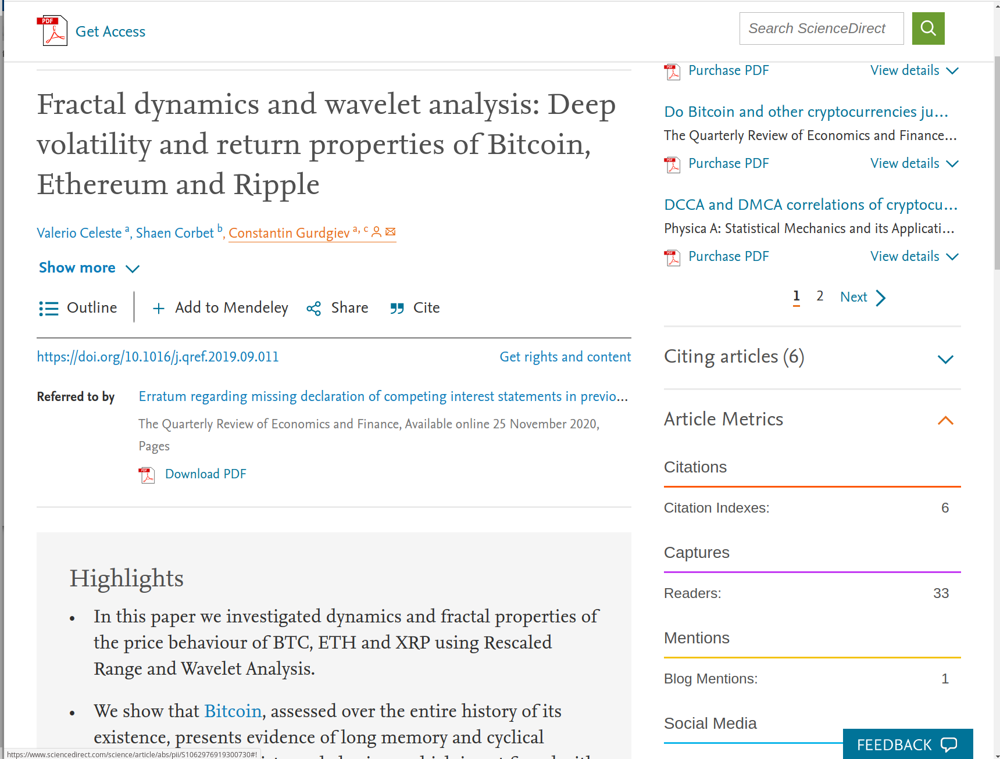
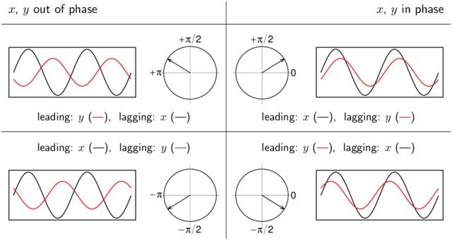

Introduction to wavelet analysis¶
Why not use Fourier analysis?¶
Although Fourier analysis is well suited to analyze constant periodic components in time series, it cannot characterize signals whose frequency content changes with time. So, a Fourier decomposition may give all spectral components of a signal, but it does not provide any information when they are present.
Task 1: Compute the Power Spectrum of a time series
library("WaveletComp");
library("fields");
x = periodic.series(start.period = 50, length = 1000)
x = x + 0.2*rnorm(1000) # add some noise
plot(x, type="l")
Power spectrum¶
The power spectrum is used to examine the main characteristics of a time series. For example, it can be used to detect if seasonality is present in the data, if so, the spectrum will show peaks at the seasonal frequencies.
The power spectrum \(S_{xx}\) of a time series \(x(t)\) can be used to describe the distribution of power in frequency space.
Using fourier analysis we can decompose any physical signal into a spectrum of frequencies.
So:
where $\( \hat{x} (f) = \int_{-\infty}^{\infty} e^{-2\pi i f t} x(t) dt\)$
Tip: Fourier transformations in R can be applied with:
fft()
Task: Complete the following function by filling out the empty lines, using the information from above.
power_spectrum <- function(x)
{
x.fft <- fft(x) # ADD HERE
sym.x <- floor(length(x.fft)/2) # Symetric part of fft
range <- seq(1, sym.x, 1)
x.fft <- x.fft[range]
x.fft.power <- abs(x.fft)**2# ADD HERE
freq <- 0:(length(x.fft)-1) * 1 / length(x.fft) / 2
our.own.power <- list("freq" = freq, "power" = x.fft.power)
return(our.own.power)
}
a <- power_spectrum(x)
plot(1/a$freq,a$power,xlim=c(0,100), type = "l")
Of course someone already implemented this in R.
x.spec <- spec.pgram(x,plot = FALSE)
plot(1/x.spec$freq, x.spec$spec, type = "l", xlim = c(0,100))
Why do we need time information about our time series?¶
x1 <- periodic.series(start.period = 90, length = 500)
x2 <- 1.2*periodic.series(start.period = 40, length = 500)
x <- c(x1, x2) + 0.3*rnorm(1000)
y1 <- periodic.series(start.period = 90, length = 1000)
y2 <- 1.2*periodic.series(start.period = 40, length = 1000)
y <- (y1 + y2)/2 + 0.3*rnorm(1000)
Task: Plot and compare these two time series:
use par() and plot()
par(mfrow=c(2,1)) # set the plotting area into a 2*1 array
plot(x, type = "l")
plot(y, type = "l")
Task: Compute the power spectrum of x and y by using the function spec.pgram(<your data>, plot = False)
x.spec <- spec.pgram(x, plot = FALSE)
y.spec <- spec.pgram(y, plot = FALSE)
par(mfrow=c(1,2)) # set the plotting area into a 2*1 array
# xlim setzen
plot(1/y.spec$freq, y.spec$spec, type = "l", xlim=c(0, 200))
plot(1/x.spec$freq, x.spec$spec, type = "l", xlim=c(0, 200))
Finally, wavelets …¶
my.data <- data.frame(x = x)
my.w.x <- analyze.wavelet(my.data, "x",loess.span = 0,
dt = 1, dj = 1/250,lowerPeriod = 16,
upperPeriod = 128,make.pval = TRUE, n.sim = 10)
my.data <- data.frame(x = y)
my.w.y <- analyze.wavelet(my.data, "x",loess.span = 0,
dt = 1, dj = 1/250,lowerPeriod = 16,
upperPeriod = 128,make.pval = TRUE, n.sim = 10)
Starting wavelet transformation...
... and simulations...
|======================================================================| 100%
Class attributes are accessible through following names:
series loess.span dt dj Wave Phase Ampl Power Power.avg Power.pval Power.avg.pval Ridge Period Scale nc nr coi.1 coi.2 axis.1 axis.2 date.format date.tz
Starting wavelet transformation...
... and simulations...
|======================================================================| 100%
Class attributes are accessible through following names:
series loess.span dt dj Wave Phase Ampl Power Power.avg Power.pval Power.avg.pval Ridge Period Scale nc nr coi.1 coi.2 axis.1 axis.2 date.format date.tz
wt.image(my.w.x, n.levels = 100,legend.params = list(lab = "wavelet power levels"))
wt.image(my.w.y, n.levels = 100,legend.params = list(lab = "wavelet power levels"))
One more example: A series with linearly increasing trend.
x = periodic.series(start.period = 1, end.period = 100, length = 1000)
x = x + 0.2*rnorm(1000)
plot(x, type="l")
my.data <- data.frame(x = x)
my.w <- analyze.wavelet(my.data, "x",loess.span = 0,dt = 1, dj = 1/250,make.pval = TRUE, n.sim = 10)
wt.image(my.w, n.levels = 250,legend.params = list(lab = "wavelet power levels"))
Starting wavelet transformation...
... and simulations...
|======================================================================| 100%
Class attributes are accessible through following names:
series loess.span dt dj Wave Phase Ampl Power Power.avg Power.pval Power.avg.pval Ridge Period Scale nc nr coi.1 coi.2 axis.1 axis.2 date.format date.tz
Wavelets are a good choice, if you want to study periodic phenomena in a time series. Especially, when the frequency changes across time. Wavelets provide a reasonable compromise in the time and frequency resolution dilemma.
Remember your last physics class and think about Heisenbergs uncertainty principle
Wavelet analysis is being used since the 1980s a find a broad use image processing, medicine, geophysics or astronomy. But recently it is also applied to economics:
Not interested in climate research? Maybe just apply what you have learned to other topics such as:

So in this course we will analyze a time series using the Morlet wavelet. The continous, complex-valued wavelet leads to a continous, complex valued wavelet transform of the time series. We can seperate the wavelet transform into its real part and its imaginary part. Thus, providing information on both, local amplitude and instantaneous phase of any periodic process across time.
The “mother” Morlet wavelet we will use is defined as
with the “angular frequency” \(\omega\) set to 6.
Task 1:
Define the wavelet function mentioned above and seperate its real and imaginary part using
Re() and Im().
Note: imaginary numbers in R are denoted as
imaginary_number <- 1i
morlet_wavelet <- function(t){
return(pi**-0.25 * exp(1i*6*t) * exp(-0.5*t**2))
}
t <- seq(-6,6,0.01)
plot(Re(morlet_wavelet(t)), col="black",xlab="", ylab="", type="l")
par(new=TRUE)
lines(Im(morlet_wavelet(t)), col="green",xlab="", ylab="", lty="solid")
title("The Morlet mother wavelet")
legend("topright",legend=c("Real","Imag"), col = c("black", "green"),
pch=rep(c(16,18),each=4),ncol=2,cex=0.7,pt.cex=0.7)
The morlet wavelet transform of a time series \(x_t\) is defined as the convolution of the series with a set of “wavelet daughters” generated by the mother wavelet, by shifting it in time by \(\tau\) and scaling it by \(s\).
where * denotes the complex conjugate.
The position of the particular daugher wavelet in the time domain is determined by the localizing time parameter \(\tau\) being shift by a time increment of \(dt\). The choice of the set of scales \(s\) determines the wavelet coverage of the series in the frequncey domain.
So this would be a for loop over all scales and for every timestep. If we use a FFT we can compute all timesteps per scale at once.
morlet_wavelet <- function(t){
return(pi**-0.25 * exp(1i*6*t) * exp(-0.5*t**2))
}
morlet_wavelet_fft <- function(f){
wave <- (pi**-0.25) * exp(-0.5 * (f - 6)**2)
return(wave)
}
x = periodic.series(start.period = 1, end.period = 100, length = 1000)
x = x + 0.2*rnorm(1000)
f <- fft(x)# ADD HERE
dt = 1
dj = 1/12
s0 = 2
n <- NROW(x)
# FFT frequencies
freq <- 0:(length(f)-1) * 1 / length(f) * 2 * pi
# Scaling of the wavelet
J1 <- round(log2(n * dt / s0) / dj)
scale <- s0 * 2 ^ ((0:J1) * dj)
wave <- matrix(0, nrow = J1 + 1, ncol = n)
for (a1 in seq_len(J1 + 1)) {
psi.star = Conj(morlet_wavelet_fft(scale[a1] * freq))
psi.ft.bar = ((scale[a1] * n)^0.5)* psi.star
wave[a1, ] <- fft(f * psi.ft.bar, inverse = TRUE)
}
power <- abs(wave)^2
new.data <- aperm(power, c(2,1))
range <- seq(1, length(f), 1)
image.plot(range, scale, new.data, ylim=c(16,128))
El Nino Southern Oscillation¶
sst <- read.table("http://paos.colorado.edu/research/wavelets/wave_idl/nino3sst.txt", header = F, skip = 19)
date <- seq(ISOdate(1871,1,1), ISOdate(1996,12,1), by = "quarter")
my.data <- data.frame(x = sst, date = date)
plot(date, my.data$V1, type = "l", ylab="[°C]", main = "NINO3 SST")
my.w <- analyze.wavelet(my.data, "V1",loess.span = 0,dt = 0.25, dj = 1/250,make.pval = TRUE, n.sim = 30)
wt.image(my.w,color.key="i", n.levels = 250,legend.params = list(lab = "wavelet power levels"))
Starting wavelet transformation...
... and simulations...
|======================================================================| 100%
Class attributes are accessible through following names:
series loess.span dt dj Wave Phase Ampl Power Power.avg Power.pval Power.avg.pval Ridge Period Scale nc nr coi.1 coi.2 axis.1 axis.2 date.format date.tz
First, we can see that most of the power is concentrad withing the ENSO band of 2-8 yr band.
With wavelet analysis, one can see variations in the frequency of occurrence and amplitude of El Niño (warm) and La Niña (cold) events. During 1875–1920 and 1960–90 there were many warm and cold events of large amplitude, while during 1920–60 there were few events (Torrence and Webster 1997). From 1875–1910, there was a slightshift from a period near 4 yr to a period closer to 2 yr,while from 1960–90 the shift is from shorter to longer periods.
Weather and Radiation¶
data(weather.radiation.Mannheim)
head(weather.radiation.Mannheim)
| date | temperature | humidity | radiation | |
|---|---|---|---|---|
| <fct> | <dbl> | <dbl> | <dbl> | |
| 1 | 2005-01-01 | 6.5 | 90 | 0.096 |
| 2 | 2005-01-02 | 6.6 | 71 | 0.095 |
| 3 | 2005-01-03 | 4.8 | 75 | 0.094 |
| 4 | 2005-01-04 | 5.0 | 80 | 0.094 |
| 5 | 2005-01-05 | 4.5 | 83 | 0.097 |
| 6 | 2005-01-06 | 7.2 | 81 | 0.096 |
par(mfrow=c(3,1))
date <- as.POSIXct(strptime(weather.radiation.Mannheim$date, format="%Y-%m-%d"))
plot(date, weather.radiation.Mannheim$temperature,
ylab = "Temp in Degree C", type="l")
plot(date, weather.radiation.Mannheim$humidity,
type="l", ylab = "relative humidity [%]")
plot(date, weather.radiation.Mannheim$radiation,
type="l", ylab ="radiation ( µ SV / h)")
For a systematic analysis, we compute the wavelet transform and plot the wavelet power spectrum of each series.
do.wavelet <- function(x, col.name){
my.w <- analyze.wavelet(x,
col.name,
loess.span = 0,
dt = 1,
dj = 1/50,
make.pval = TRUE,
n.sim = 30)
max.power <- max(my.w$Power)
wt.image(my.w,
color.key ="i",
maximum.level = sqrt(max.power) * 1.001,
exponent = 0.5,
n.levels = 250,
legend.params = list(lab = "wavelet power levels"),
show.date = TRUE, date.format= "%F", timelab = "")
}
# wavelet for temperature
do.wavelet(weather.radiation.Mannheim, "temperature")
Starting wavelet transformation...
... and simulations...
|======================================================================| 100%
Class attributes are accessible through following names:
series loess.span dt dj Wave Phase Ampl Power Power.avg Power.pval Power.avg.pval Ridge Period Scale nc nr coi.1 coi.2 axis.1 axis.2 date.format date.tz
# wavelet for radiation
do.wavelet(weather.radiation.Mannheim, "radiation")
Starting wavelet transformation...
... and simulations...
|======================================================================| 100%
Class attributes are accessible through following names:
series loess.span dt dj Wave Phase Ampl Power Power.avg Power.pval Power.avg.pval Ridge Period Scale nc nr coi.1 coi.2 axis.1 axis.2 date.format date.tz
The same settings for the power level range have been used for the three plots, this makes it easier to compare the features of the three series. Indeed, there is a strong 365-day period in the temperature series. To a lesser extent, this is also true for the other two series. Radiation is a more complex phenomenon: many other periods are significant too.
Cross-wavelet¶
There are three observations for each day, and we can use cross-wavelet analysis to investigate the periodic linkages between pairs of the three series. To that end, we need a scheme which helps interpret cross-wavelet power spectra.

Each pair from the series temperature, humidity and radiation can be analyzed jointly with respect to its wavelet coherency; this will reveal which series is leading at given time and period (in case of joint significance):
my.wc <- analyze.coherency(weather.radiation.Mannheim,
my.pair = c("temperature", "humidity"),
loess.span = 0,
dt = 1, dj = 1/50,
lowerPeriod = 32, upperPeriod = 1024,
make.pval = TRUE, n.sim = 10)
Starting wavelet transformation and coherency computation...
... and simulations...
|======================================================================| 100%
Class attributes are accessible through following names:
series loess.span dt dj Wave.xy Angle sWave.xy sAngle Power.xy Power.xy.avg Power.xy.pval Power.xy.avg.pval Coherency Coherence Coherence.avg Coherence.pval Coherence.avg.pval Wave.x Wave.y Phase.x Phase.y Ampl.x Ampl.y Power.x Power.y Power.x.avg Power.y.avg Power.x.pval Power.y.pval Power.x.avg.pval Power.y.avg.pval sPower.x sPower.y Ridge.xy Ridge.co Ridge.x Ridge.y Period Scale nc nr coi.1 coi.2 axis.1 axis.2 date.format date.tz
wc.image(my.wc, n.levels = 250,
legend.params = list(lab = "cross-wavelet power levels"),
color.key = "interval",
# time axis:
label.time.axis = TRUE, show.date = TRUE,
spec.time.axis = list(at = paste(2005:2014, "-01-01", sep = ""),
labels = 2005:2014),
timetcl = -0.5, # outward ticks
# period axis:
periodlab = "period (days)",
spec.period.axis = list(at = c(32, 64, 128, 365, 1024)),
periodtck = 1, periodtcl = NULL)
Temperature and humidity are out of phase, with humidity leading by roughly 1 / 8 year.
Temperature and humidity are out of phase, with humidity leading by roughly 1/8 year: Humidity reaches its trough about 6 to 7 weeks before temperature reaches its maximum
In the atmosphere the relative humidity of the air is increased, and condensation results when air temperature is reduced to the dew point or when sufficient water vapour is added to saturate the air